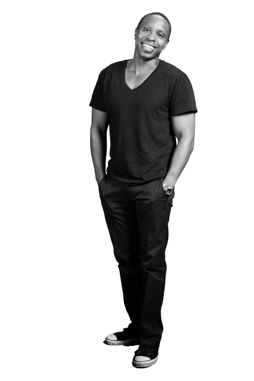

HOME
Everything
is connected
You connect, too.
Find out more 
SERVICES
Your Product,
Our Vision
The information age is the age of ubiquity, and we seek to maximize the digital... 
ABOUT US
A brief history of the internet of things
ubiiqu offers comprehensive, innovative services for the digital landscape.
MEET & GREET

Meet the core team of ubiiqu
We come along with diversity - take a look at who you should be working with 
Services
The information age is the age of ubiquity, and we seek to maximize the digital scope of our clients in the most dynamic ways possible. From the initial stages of analysis all the way through realization and testing, our solutions are not only unique, but form-fitting, allowing our clients to choose from any or all of our three core areas of expertise when developing their digital profiles.

Analysis
let's take your measurements
In terms of digital services, we're the first to admit that each company is created differently, requiring services custom-tailored to their size, user base and spread. ubiiqu analyzes each client's potential and derives the appropriate web strategies to encourage growth. Whether enhancing visual identities, improving functionality or opening up to new channels such as mobile, web or console applications, we focus on forging a multi-pronged approach through our hybrid combination of technology, business and creative consulting.

Conception
your product, our vision
Once we understand what needs to be done, we then focus on how we can implement it. We select the appropriate digital building materials, from software architecture to design mock-ups, and go about modeling the systems, channels and devices that comprise a comprehensive web strategy. From wireframe models, software prototyping and business development, this is the stage where we engage our well-rounded team of designers, developers, copywriters and marketing professionals to conceive the most encompassing of solutions.

Realization
beta, meet alpha
From hundreds of thousands of keystrokes to the many hours spent programming quality code, the minds at ubiiqu put in some very physical effort into realizing our “virtual" services. We love a thorough challenge and embrace the latest technologies to push the limits of our abilities even further. This is where true invention happens. It’s where we forge our own answers and where we redefine the possibilities of what you’ve previously thought possible. It all culminates in our rigorous prototyping, testing and quality control phase, which ensures truly revolutionary services for our clients the moment our solutions hit the market.
Technologies
Fusing the capabilities of a large consultancy firm with the flexibility of a start-up environment,
the minds behind ubiiqu are fluent in all the requisite technologies to develop, foster and promote strong, scalable digital profiles. Our core technologies include all major programming languages and CMS platforms, with a particular emphasis on integration between web-based media, mobile devices and home entertainment systems. We seek to create products that can be translated into any number of applications, aiming at cross-platform pollination whenever and wherever possible.
Our core technologies &
specialities include:

- Web Programming: HTML5, HbbTV, CSS, JavaScript, jQuery or XSLT
- System Scalability: WebSockets, Node.js, PHP, API building
- CMS Platforms: TYPO3, Drupal, Joomla, Wordpress and Silverstripe CMS platforms
- Multichannel and responsive technologies: TV, mobile, tablet devices, desktops, navigation, game consoles, and more

About us
ubiiqu offers comprehensive, innovative services for the digital landscape. From the web to Smart TV, we understand the platforms that will power the future. Our team pools together the experience that allows us to deliver custom-tailored solutions for an array of clients looking to revolutionize their digital identity. Our aim is to develop strong, sustainable profiles for the ever-evolving digital landscape.

Everything is connected: A brief history of the internet of things
Taking our name from the word “ubiquitous", ubiiqu seeks to expose the interconnectivity of everything, online and off. As internet-based applications jump from desktops to mobile devices, ubiiqu focuses on the next generation of online applications, seeking to integrate the virtual landscape with the physical landscape. From cars to homes, mobile devices and entertainment centers, ubiiqu designs specifically for the “internet of things", seeking to better integrate the objects of our daily lives with unique networked services.

We target ubiquity
With over 15 years of consulting and technical expertise under our belts, the minds at ubiiqu have been consistently tinkering to provide the best solutions for a wide variety of internet- based applications. We are internet junkies, programming language polyglots and new-media devotees that devote our resources to forging dynamic services that meld creativity with adaptability. Our scalable solutions are ideal for those wishing to achieve “ubiquity" in today’s networked environment.

Our House
We serve as a complete, stand-alone company dedicated to fostering digital profiles for clients, customers and brands. Our independent perspective allows us to provide fresh insight for either high-profile clients or new endeavors looking to establish a strong online profile.
Meet 'n' Greet

Philipp
Vision Development
Seeing is believing, but understanding what you see is certainly of a higher order. ubiiqu's vision developer Philipp Boué brings his multilingual talents to the forefront, speaking not only German, English and some Spanish, but also fluent in the programming languages that allow him to articulate projects with 20/20 vision. His hybrid approach splices together technical savvy with creative consulting, resulting in services that go far beyond that which meets the eye.
With a Masters in International Business Administration—and certainly the emphasis is on international—Philipp's had stints between London, Munich, Melbourne and Düsseldorf performing an array of consultancy and project management positions for clients including Deutsche Bahn, ZEIT Verlag, Ralph Lauren or Vodafone. When he's not forging peerless visual profiles, you might find him DJing drum and bass, trying his hand at music production or rooting tirelessly for Borussia Dortmund with colleague and fellow fan Manuel.
 Send an email
Send an email
to Philipp
Manuel
Technical Affairs
The talented Mr. Bieh began his engagement with the internet at the ripe age of 14 when he set up his first commercial website. He has since laid the technical foundations for a wide variety of web pages, software applications and mobile services during his time. With demonstrated programming skills in HTML5, PHP, SQL, CSS3 and an especially strong sense of JavaScript, Manuel takes the nitty gritty syntax of digital coding and transforms it into clean, elegant code. Having serviced a variety of clients while working as a technical officer and software developer, he was even selected in 2008 to pen the first book in Germany about mobile web design.
As ubiiqu's head of technical affairs, Manuel not only programs with proficiency, but he seeks to connect all that he codes into an “internet of things". What’s that? Well, mobile applications may be the first step, but soon the most mundane of objects will be linked together. This might be the world of tomorrow - he's got it going today.
Send an email
to Manuel
Igor
Operations
Certainly one of the few people who can boast a discography just as impressive as their CV, Igor splits his time between New York and Berlin promoting a wide range of projects from celebrity marketing tools, digital media applications and the occasional album or two. He signed his first major record deal in 1997 and went on to produce for Sony, Universal and Bertelsmann, which gave him the impetus to fuse his love of music with the emerging possibilities of the mobile market. Since then he's peppered MGM, Fox Mobile and White Diamonds with business development strategies that have helped blossom the profiles of their products and services.
As head of operations for ubiiqu, Igor injects his background in art into a management style that's equal parts competent and creative. Whether researching new mobile revenue models, establishing streaming services or simply hanging out with fellow musicians and “open-minded business freaks" like himself, he's to be found on the fast track creating the next applications of the brave new digital world.

Send an email
to Igor
Join us!
Just like our products and services, ubiiqu offers a working environment that values left-field thinking and an inclination towards the unconventional. At the heart of our working week lies the 4+1 philosophy, where each member of our team works four days for the company and one day on their own project. Alongside perks such as company bikes, fresh fruit and an inspiring, open office space, we make sure to provide a relaxed, all-encompassing professional experience. We’re also power-napping friendly.

Think you would shine as part of our team?
Drop us your CV alongside a very brief letter and a concise overview of your previous projects (commercial and/or open source) explaining how you could contribute your skills to ubiiqu.
everything is
connected
you, too?